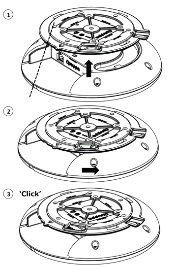

Использование локатора Q17
В данном разделе приведены указания по установке локатора Q17, подключению его к источнику питания и сети, а также сбросу устройства с восстановлением его заводских настроек.
Установка
Вблизи перед установленным локатором Quuppa Q17 и сбоку от него не должно быть никаких металлических препятствий (например, воздуховодов системы кондиционирования воздуха, больших балок перекрытия, конструкций здания). Если нужно расположить Quuppa Q17 в таких условиях, установите его на конце жесткого кабель-канала, чтобы устройство оказалось ниже таких препятствий.
- Закрепление монтажного кронштейна на потолке
Установка начинается с закрепления монтажного кронштейна. В монтажном кронштейне имеется несколько отверстий для крепежных винтов. Чтобы кронштейн был неподвижен, используйте не менее 4 винтов. Рекомендуется схема крепления по стандарту VESA 75 х 50 мм или 50 х 50 мм. Обе схемы нанесены на монтажном кронштейне.
Если Ethernet-кабель нужно проложить скрыто, то его можно протянуть через отверстие для ввода кабеля на кронштейне.Чтобы установить Quuppa Q17 в нужном положении, можно воспользоваться индикатором ориентации и установочной меткой на монтажном кронштейне.
CAUTION:Никогда не устанавливайте монтажный кронштейн на горячих поверхностях. Перед установкой всегда проверяйте, что поверхность способна выдержать массу оборудования.Несоблюдение общих правил техники безопасности может привести к повреждению объектов или травмированию людей. Воспользуйтесь услугами квалифицированных специалистов по установке устройств Quuppa Q17.
- Установка основного блока Quuppa Q17 на монтажный кронштейн

- Подключите кабель Ethernet и кабель с разъемом Micro USB, если он используется.
- Для защиты зоны разъемов от пыли и грязи можно установить на нее крышку разъемов.
- Сориентируйте основной блок Quuppa Q17 относительно кронштейна так, чтобы установочная метка на монтажном кронштейне оказалась напротив светодиодного индикатора на основном блоке Quuppa Q17 (1).
- Приподнимите основной блок Quuppa Q17, чтобы кронштейн вошел в предназначенную для него выемку (1).
- Поворачивайте основной блок Quuppa Q17 (2), пока не услышите щелчок (3).
Подключение к источнику питания
Вариант 1: использование Power over Ethernet (PoE)
Quuppa Q17 позволяет использовать в качестве источника его питания стандартные компоненты с поддержкой PoE (Power over Ethernet) IEEE 802.3at типа 1, например коммутатор с поддержкой PoE или инжектор питания. Используйте только стандартные сертифицированные устройства PoE. При использовании PoE отдельный источник питания постоянного тока не требуется.
Вариант 2: использование отдельного кабеля питания 5 В пост. тока с разъемом Micro USB
Если компоненты с поддержкой PoE не используются, то подключите Quuppa Q17 к источнику питания 5 В с помощью кабеля с разъемом Micro USB. Используйте только совместимые источники питания. Если есть сомнения в совместимости источника питания, обратитесь в компанию Quuppa.
При подаче питания Quuppa Q17 включается автоматически. Красный индикатор несколько раз мигнет и затем станет непрерывно гореть, пока Quuppa Q17 не подключится к программному обеспечению Quuppa Positioning Engine.
Подключение к сети
Подключите Quuppa Q17 к сети, вставив кабель Ethernet в Ethernet-разъем RJ-45. Для подключения устройств Quuppa Q17 можно использовать экранированные или неэкранированные кабели. С целью обеспечения безопасности и для предотвращения повреждений устройства Quuppa Q17 подключайте к нему только стандартные сертифицированные сетевые компоненты.
Если устройство Quuppa Q17 правильно подключено к сети, но не активировано программным обеспечением Quuppa Positioning Engine, то будет медленно мигать красный индикатор. Если устройство Quuppa Q17 активировано программным обеспечением Quuppa Positioning Engine, то будет мигать или непрерывно гореть синий индикатор.
Сброс с восстановлением заводских настроек
Чтобы сбросить настройки локатора и восстановить заводские настройки, тонкой булавкой нажмите и удерживайте кнопку сброса локатора, когда он подключен к источнику питания. Когда индикатор загорится зеленым, продолжайте удерживать кнопку сброса и отпустите ее только после того, как индикатор станет красным. После отпускания кнопки сброса начнется перезагрузка локатора, при этом индикатор один раз последовательно мигнет красным, зеленым и синим цветом.